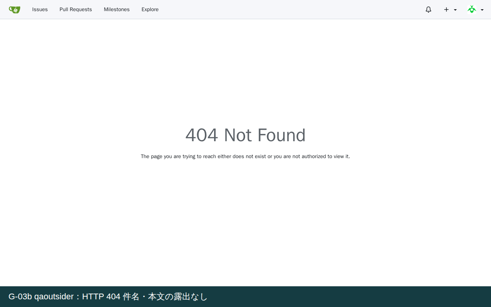

G-03 / Gitea / Passed
Check private issue access
A collaborator with read access and a signed-in nonmember each open the same private issue. The collaborator can read its title and description. The nonmember sees a 404 page. The test also checks access through the API.
The collaborator can read the issue The nonmember sees a 404 page
The nonmember sees a 404 page
Browser recordings
Read-only collaboratorSigned-in nonmemberRun details and failure drill
November 23, 2026 · Chromium · Revision 72da163 · CI run 45093189062. All seven cases also passed during the local recording run.
In an earlier four-case suite, changing the expected title to “reconcile invoices” while the app stored “review the monthly report materials” produced one failure and three passes. Restoring the expected title brought all four tests back to passing.